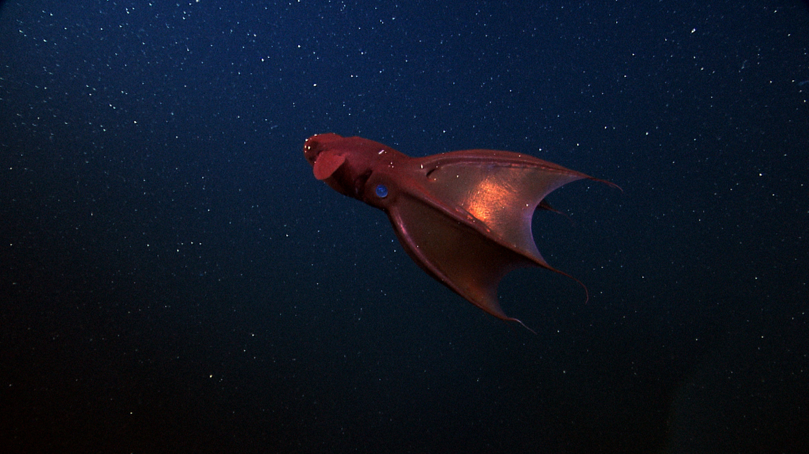
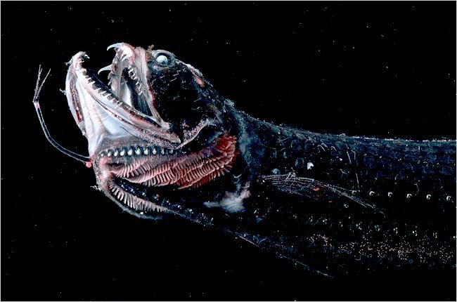
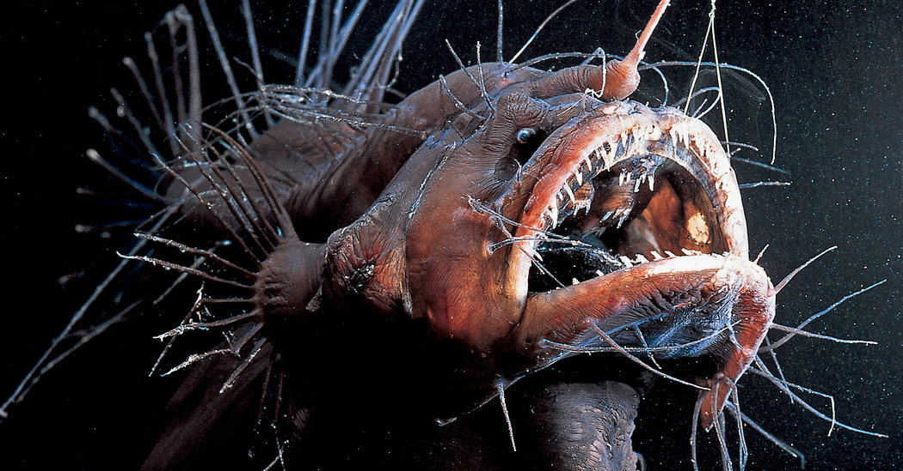
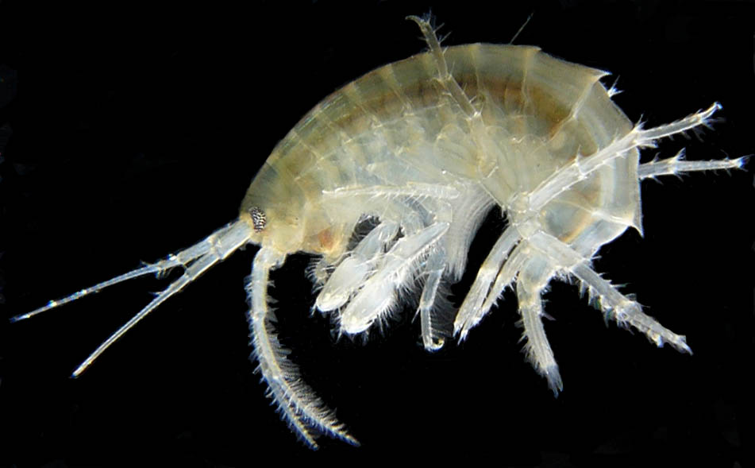
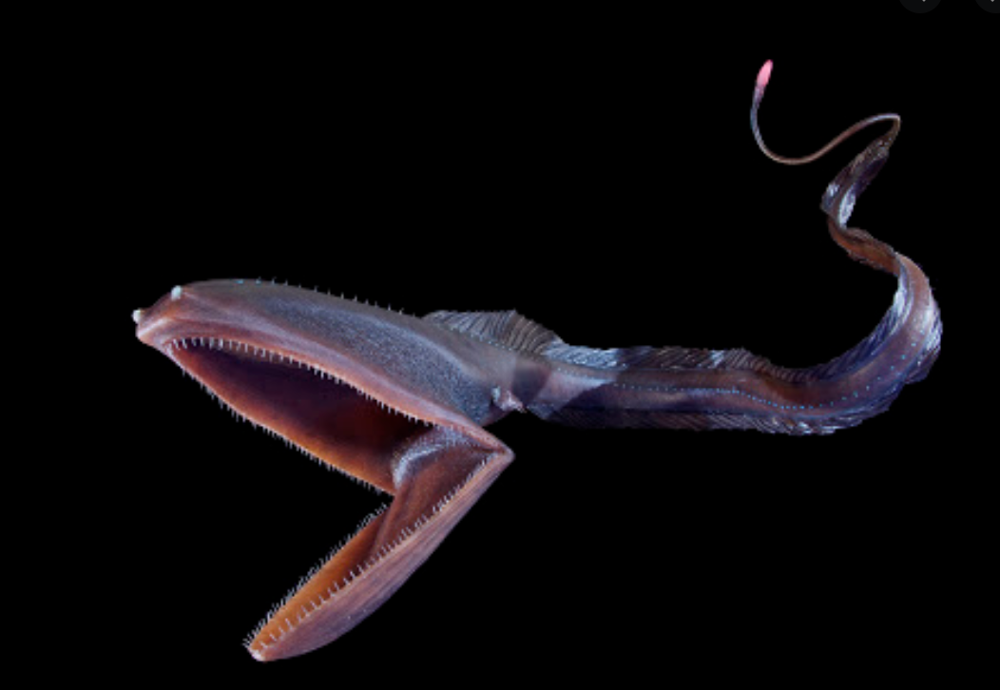
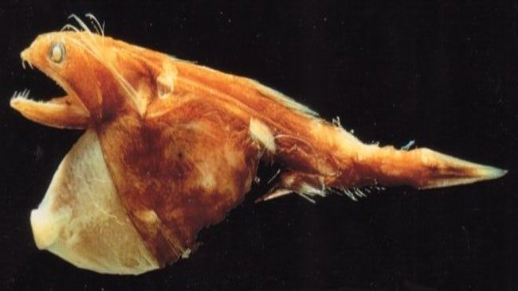

The Bathypelagic Zone
The Midnight Zone
This zone starts at the bottom of the mesopelagic and stretches down to 3000 m. The bathypelagic is much larger than the mesopelagic and 15 times the size of the epipelagic. It is the largest ecosystem on earth. The upper bound of this zone is defined by a complete lack of sunlight. Organisms in the bathypelagic live in complete darkness, 24 hours per day. The darkness can be interrupted, however, by some light caused by the organisms themselves. This so called bioluminescence can be used to attract prey or to find a mate. Some species have lost their ability to see anything at all.
Marine Life





